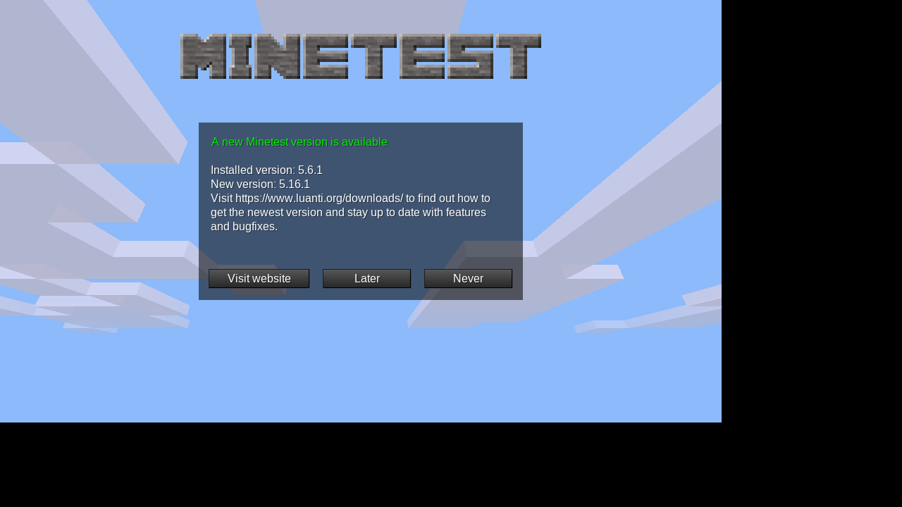

Why play
This gives the arcade a Minecraft-like local world that can run without internet and works on phones, laptops, and desktops.
The open-source voxel sandbox formerly known as Minetest: host local worlds, build together, explore, survive, and eventually add carefully cached mods/games.
These notes are written for someone deciding what to launch from the LAN Arcade while offline.
This gives the arcade a Minecraft-like local world that can run without internet and works on phones, laptops, and desktops.
Luanti 5.16.1 Windows installer/ZIPs, macOS builds, and Android APKs for ARM and x86 devices.
A real phone/laptop join into the GannanNet world is still pending. The server only proved it starts and listens on UDP 30000.
Installers and archives are served from GannanNet. The download shelf includes a file details and checksums.

Official page: https://www.luanti.org/en/downloads/ and https://github.com/luanti-org/luanti
Enough to orient a new player before the deeper manual or a real playtest.
Use the local installer/APK. No internet should be needed once the files are cached here.
Admin starts the Luanti service/world on the arcade box. Default smoke port is UDP 30000.
In the client, use server 192.168.1.106 and port 30000 when the service is running.
Only add mods/games after they are cached, licensed, and tested offline as their own bundle.
Native games are promoted in gates: cached artifacts, service smoke, client launch, join/play, then real LAN device smoke.